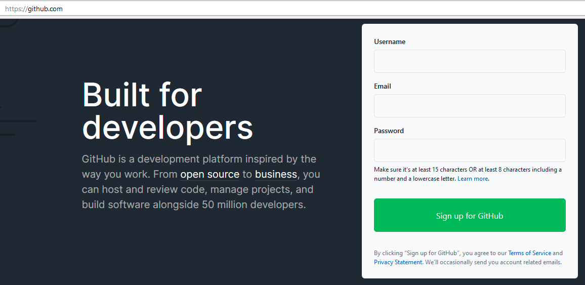
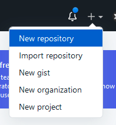
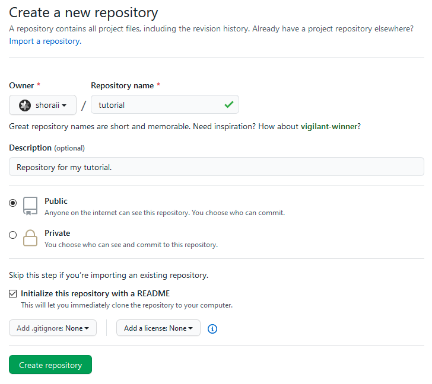
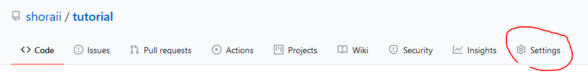
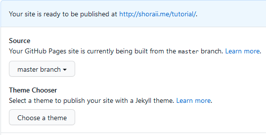
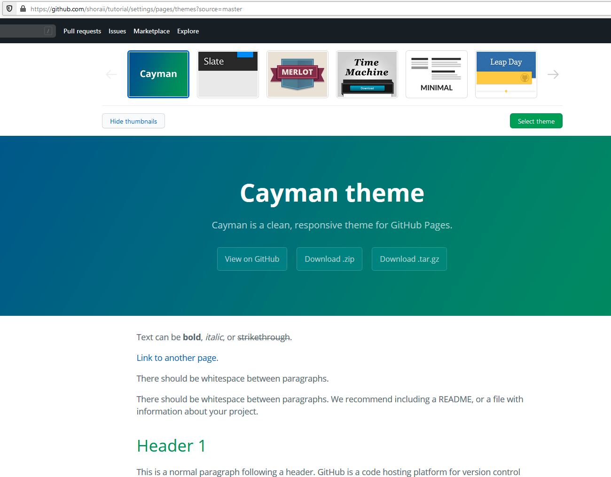
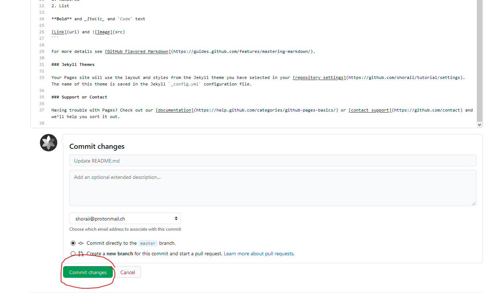
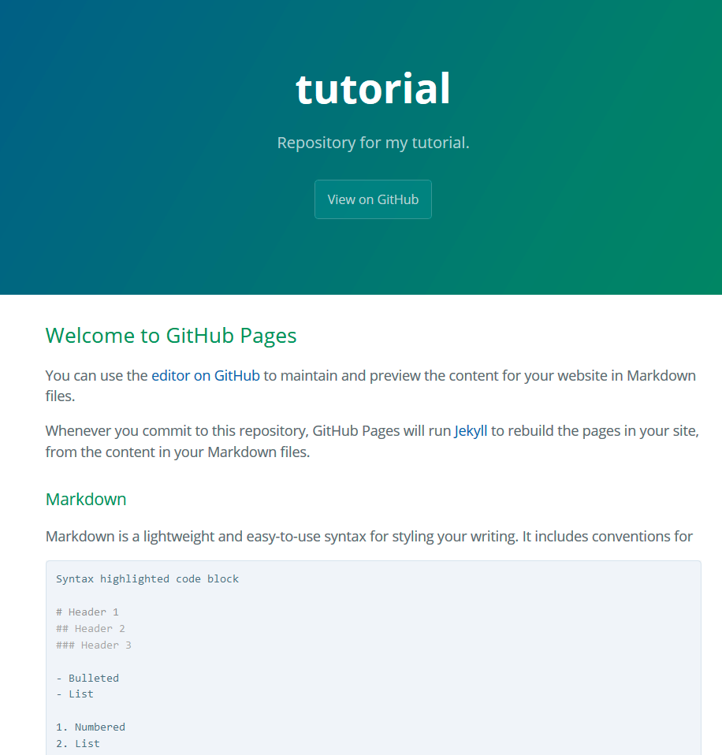
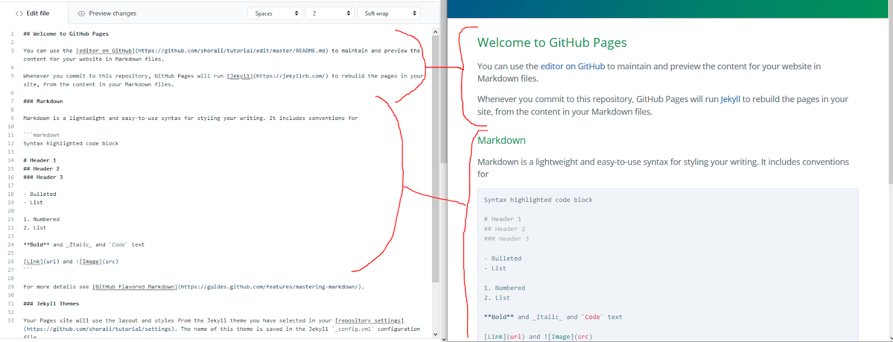
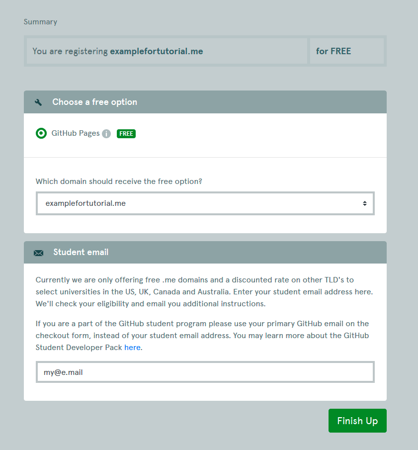

Создание своего сайта при помощи GitHub Pages
Введение
В данной инструкции будет описан алгоритм создания своего сайта при помощи GitHub Pages на основе своего репозитория в GitHub. Этот гайд полезен, если требуется сделать сайт со статическим содержанием, т.е. после запуска сайта невозможно поменять его содержимое, и для изменений нужно перезапустить его, а также, например, не требуется использовать базы данных. Для полного понимания приведена таблица с хорошими и плохими кейсами.
| Хорошо | Плохо |
|---|---|
Страница о сервере Minecraft, содержащая важную информацию, правила и новости. Также есть список интересных schematic’ов. Вся информация редактируется только администраторами. |
Страница о сервере Minecraft с функцией входа в аккаунт, новости с возможностью комментирования, список schematic'ов, который можно изменить прямо на сайте. |
0. Создание аккаунта GitHub (1)
Заходим на GitHub, создаем аккаунт, подтверждаем ящик.

1. Создаем репозиторий (2)
Идем на github.com, находим справа сверху знак +, жмем на него, затем на New repository.

В появившейся форме заполняем нужные поля: Repository name — название репозитория (оно будет использовано в названии страницы), Description — описание, оно будет написано на странице репозитория.
Оставляем репозиторий публичным (любой желающий сможет посмотреть код сайта), отмечаем пункт Initialize this repository with a README. Жмем на Create repository.

2. Подключаем GitHub Pages к репозиторию (1)
В появившейся странице идем сразу в Settings

и мотаем вниз до пункта GitHub Pages. В подпункте Source выбираем master branch.

...и всё? Технически, да. Только что созданная страница готова к посещению, она будет иметь вид author.github.io/repository-name.
3. Выбираем тему сайта (необязательно) (3)
Мы можем добавить одну из заранее приготовленных тем к новоиспеченному сайту.
Это можно сделать в подпункте Theme Chooser.
А можем не добавлять, при этом страница будет выглядеть минималистично и не так уж уродилво.

Первая тема выглядит достаточно хорошо, я буду использовать её.
Выбрав тему жмем на Select theme, и перед нами предстает стена кода на непонятном языке.
Пока что игнорируем ее, идем вниз и жмем на Commit changes.

Бонусный квест (8): разобраться, что находится над кнопкой Commit changes
Теперь, если мы перейдем на страницу нашего сайта, то мы увидим, что действительно тема была применена.

4. Редактируем текст (необязательно) (4)
Если нужно быстро отредактировать страницу, не зная HTML и Javascript, то достаточно разобраться в форматировании текста. Но при этом изменить что-либо, кроме текста не выйдет.
Находим на нашей странице ссылку editor on GitHub, жмем по ней, и перед нами вновь появляется стена кода.
Самое время в ней разобраться.
Это текст, использующий язык разметки Markdown.
Он позволяет быстро форматировать текст, а также добавлять и редактировать таблицы.

5. Добавляем разработчиков (1)
Допустим, что мы не знаем, как сделать сайт со своей темой и гораздо более красивым, но знаем людей, которые могут справиться с этой задачей.
Тогда надо дать им возможность редактировать содержимое репозитория.
Для того, чтобы это сделать, идем на страницу репозитория, далее в настройки, слева выбираем Manage access, и нажимаем на зеленую кнопку Invite a collaborator

Пишем юзернейм нужного разработчика и приглашаем его в репозиторий. Теперь он может менять его содержимое.
6. Получаем свой домен! (6)
author.github.io/repo выглядит гораздо хуже, чем my-domain.me или epicdomain.tech. GitHub Pages позволяет использовать свой домен, но для этого нам надо его получить.
Можно приобрести домен, а можно его получить бесплатно. Как? При помощи GitHub Education Pack. Проходим по ссылке, авторизируемся и следуем инструкциям.
Чтобы получить набор, надо подтвердить статус учащегося. Для этого достаточно указать и подтвердить свою корпоративную почту и, если потребуется,
предъявить свой студенческий билет. После успешного подтверждения идем на nc.me, пишем домен, который мы хотим получить, берем его (который кончается на .me),
если он не занят, подтверждаем заказ. Далее выбираем опцию GitHub Pages, и вписываем главный ящик GitHub. Чтобы узнать, какой ящик главный, идем сюда,
и находим надпись Primary. Она находится напротив главного ящика.

Жмем на Finish Up, и мы получили бесплатный домен .me на 1 год! Теперь мы можем его использовать в своем репозитории.
Идем в настройки репозитория, мотаем вниз до GitHub Pages, и в поле Custom domain выписываем наш домен. Готово. Теперь наш сайт доступен по домену.